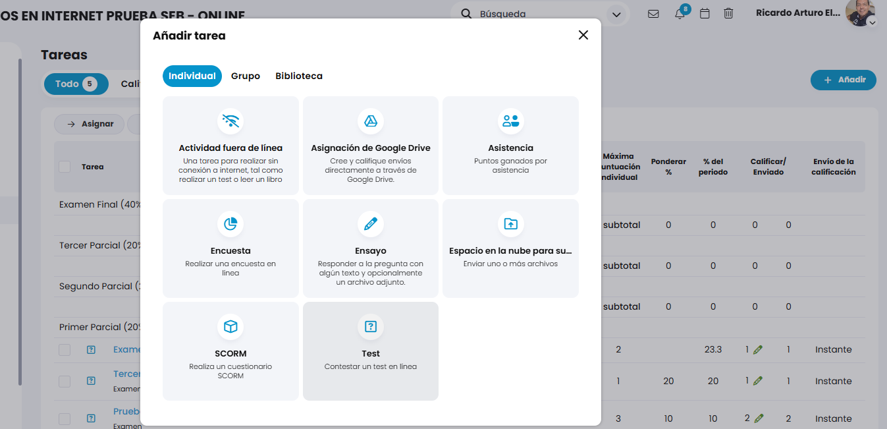
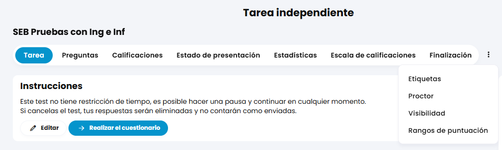
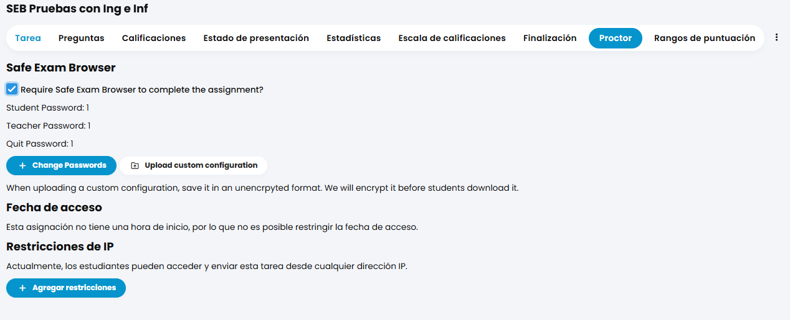
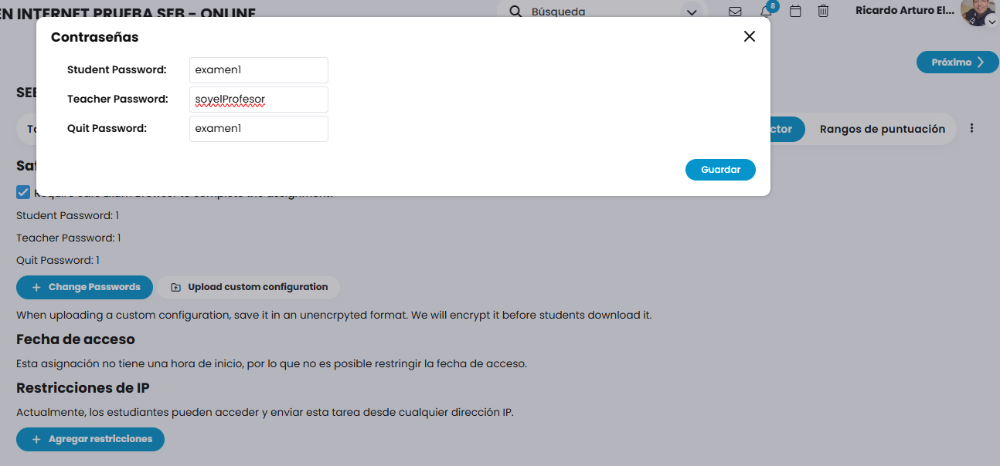
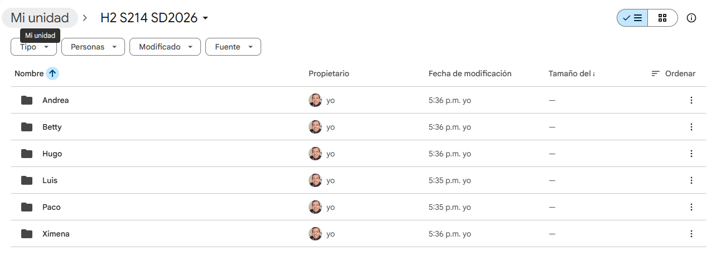
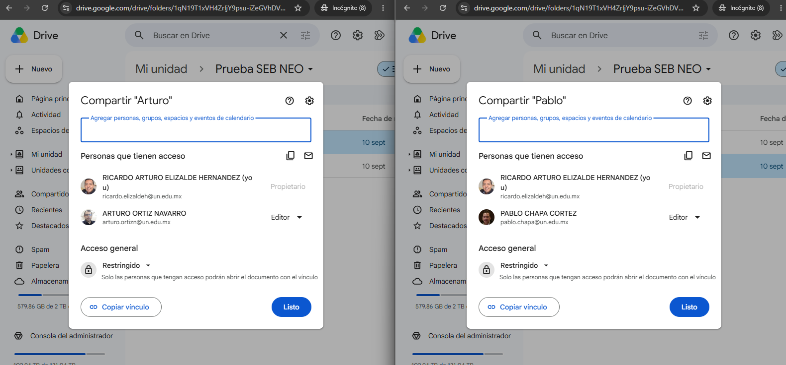
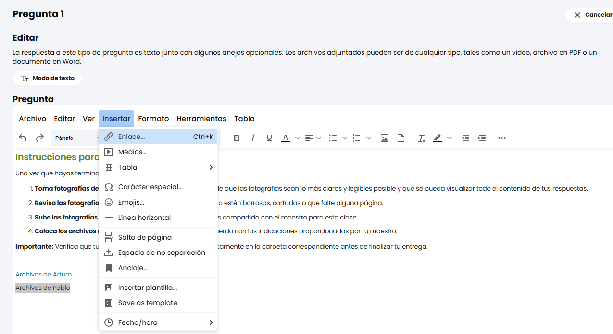
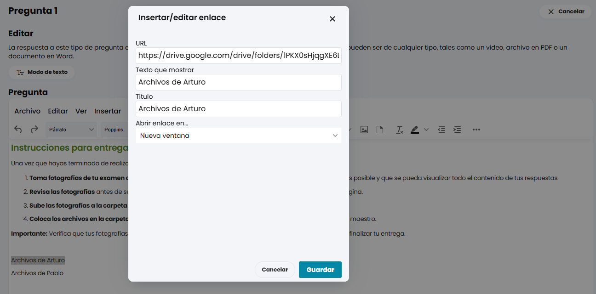
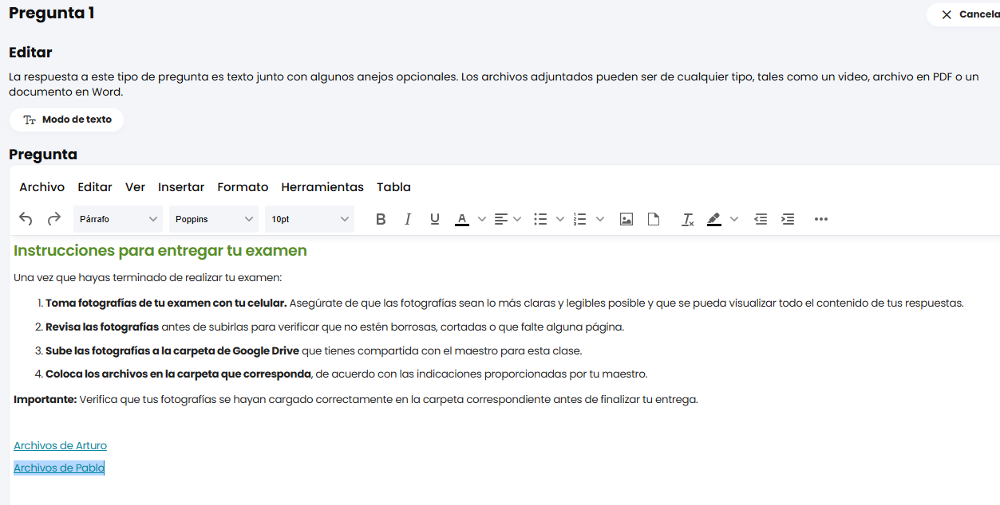

Volver al Menú Principal
¿Qué aprenderás en esta guía?
1 Configuración del Examen en NEO LMS
-
Crea la tarea como normalmente creas un examen dentro de la plataforma NEO LMS.

-
Una vez finalizada la configuración general del examen, dirígete al menú y selecciona la opción Proctor.

-
En esta sección, habilita la opción de Safe Exam Browser y marca la casilla:
Require Safe Exam Browser to complete the assignment?
-
Haz clic en el botón correspondiente para asignar las claves. Se recomienda definir las siguientes contraseñas:
- Student Password (Contraseña de estudiante) y Quit Password (Contraseña de salida): Usar la misma clave.
- Teacher Password (Contraseña del profesor): Asignar una clave totalmente distinta a las dos anteriores.

2 Configuración de Google Drive para preguntas de "Subir Archivos"
-
En Google Drive, crea una carpeta dedicada para cada alumno. (Por ejemplo: si la clase tiene 5 alumnos, se deben crear 5 carpetas independientes).

-
Compartir cada carpeta exclusivamente con el alumno correspondiente.
Reglas importantes: Un solo alumno por carpeta. NO compartas dos o más alumnos en la misma carpeta para proteger la privacidad de sus entregas.

3 Redacción de Pregunta y Enlaces en NEO LMS
-
Al crear la pregunta del tipo Subir archivos, incluye en el apartado de descripción el siguiente texto instructivo:
Instrucciones para entregar tu examen: 1. Una vez que hayas terminado de realizar tu examen, toma fotografías de tu examen con tu celular. Asegúrate de que las fotografías sean lo más claras y legibles posible y que se pueda visualizar todo el contenido de tus respuestas. 2. Revisa las fotografías antes de subirlas para verificar que no estén borrosas, cortadas o que falte alguna página. 3. Sube las fotografías a la carpeta de Google Drive que tienes compartida con el maestro para esta clase. 4. Coloca los archivos en la carpeta que corresponda, de acuerdo con las indicaciones proporcionadas por tu maestro. Importante: Verifica que tus fotografías se hayan cargado correctamente en la carpeta correspondiente antes de finalizar tu entrega.

-
En el texto de la pregunta, inserta los nombres de los alumnos y convierte cada uno en un ENLACE apuntando a su respectiva carpeta compartida de Drive.
Crucial: Configura el enlace con la opción "Abrir enlace en: Nueva ventana" para evitar que el navegador cierre la evaluación activa.
-
Al finalizar, la pregunta debe incluir las instrucciones redactadas y un listado limpio con un enlace individual asignado a cada alumno para el envío de sus evidencias.
